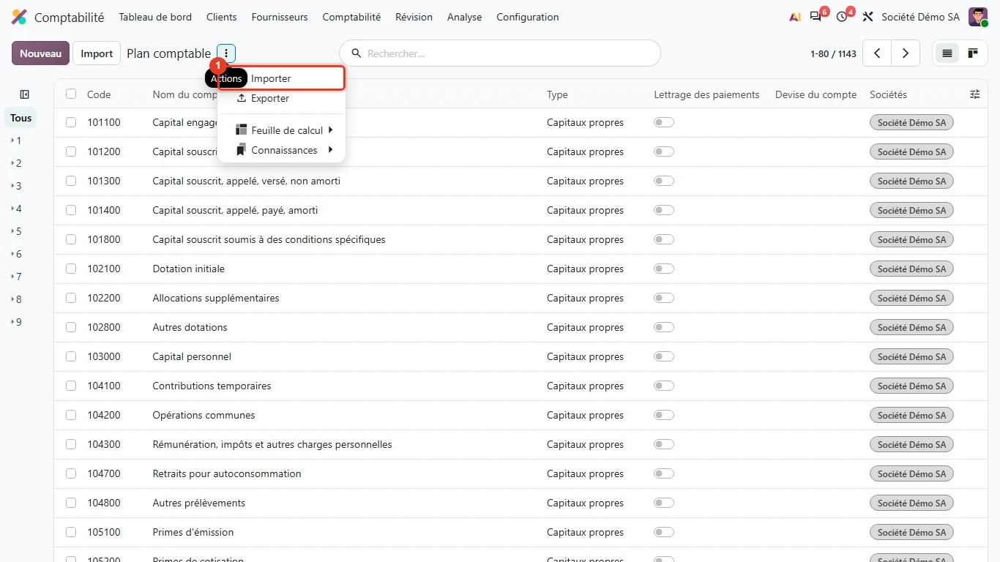
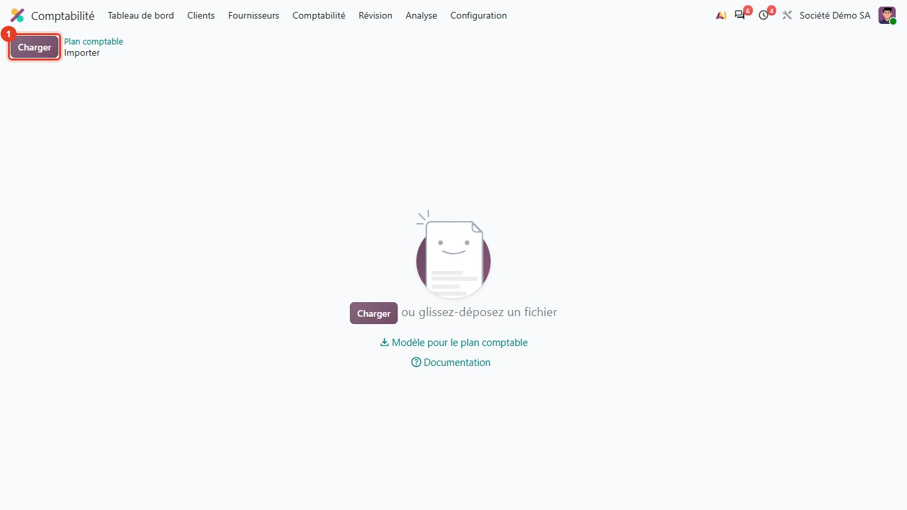

Importer des données à partir d'un fichier
Objectif. Charger en une fois des comptes, des contacts, des écritures ou des immobilisations.
Menu Odoo 15Dans la liste concernée : Favoris > Importer des enregistrements
Étapes
- Ouvrez la liste (ex. Plan comptable), menu Favoris ou Actions > Importer (1).
- Cliquez sur Charger (1) et choisissez le fichier Excel : une ligne d'en-tête, puis les données.
- Vérifiez la correspondance des colonnes avec les champs d'Odoo.
- Cliquez sur Tester : corrigez les erreurs signalées dans le fichier.
- Cliquez sur Importer. Faites-le d'abord sur une base de test.


À vérifier
- Le nombre de lignes importées égale celui du fichier.
- Les écritures importées sont contrôlées en brouillon avant d'être comptabilisées.
À éviter
- N'importez jamais directement en production sans test.
Exercice
Importez 3 comptes à partir d'un petit fichier Excel.